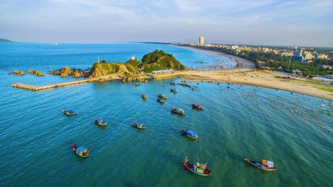
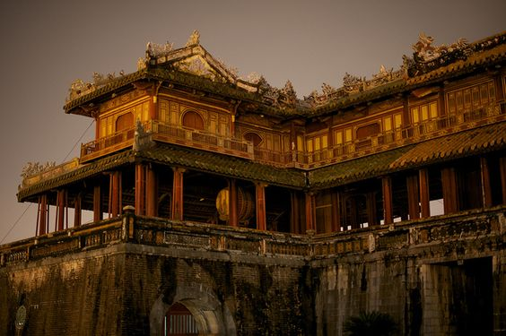

Bắc Trung Bộ nằm gọn trên dải đất hẹp nhất của Việt Nam, giữa một bên là dãy Trường Sơn hùng vĩ, một bên là biển Đông mênh mông. Với đường bờ biển dài cùng nhiều cửa khẩu giáp với Lào, khu vực này có vị trí đặc biệt quan trọng trong phát triển kinh tế - du lịch giữa Việt Nam với các nước trong khu vực trên hành lang Đông - Tây.
Bắc Trung Bộ là vùng có nhiều điều kiện thuận lợi để phát triển du lịch với các bãi biển đẹp như: Sầm Sơn (Thanh Hóa), Cửa Lò (Nghệ An), Nhật Lệ (Quảng Bình), Cửa Tùng (Quảng Trị), Thuận An, Lăng Cô (Thừa Thiên – Huế)…; nhiều cảnh quan thiên nhiên đặc sắc như: sông Hương, phá Tam Giang, cầu Hai (Thừa Thiên – Huế), núi Thiên Cầm, hồ Kẻ Gỗ (Hà Tĩnh)…; các khu bảo tồn thiên nhiên, vườn quốc gia: Bến En (Thanh Hóa), Pù Huống, Pù Mát (Nghệ An), Vũ Quang, Kẻ Gỗ (Hà Tĩnh), Phong Nha – Kẻ Bàng (Quảng Bình), Bạch Mã (Thừa Thiên – Huế)…; những di tích lịch sử, văn hóa, kiến trúc có giá trị: Kinh thành Huế, đường mòn Hồ Chí Minh hay địa đạo Vịnh Mốc, nghĩa trang Trường Sơn, căn cứ Cồn Tiên, Thành cổ Quảng Trị… Nơi đây còn là quê hương của nhiều lễ hội độc đáo như: lễ hội Lam Kinh (Thanh Hóa), lễ hội đền Cuông (Nghệ An), lễ hội điện Hòn Chén (Thừa Thiên – Huế); đặc biệt Festival Huế được tổ chức định kỳ 2 năm một lần đã trở thành một sự kiện văn hóa mang tầm quốc tế được nhiều du khách trong và ngoài nước quan tâm.

Khu vực này còn là nơi tập trung 4 di sản thế giới được UNESCO công nhận là Thành nhà Hồ, Vườn quốc gia Phong Nha - Kẻ Bàng, Quần thể di tích cố đô Huế và Nhã nhạc – Âm nhạc cung đình Việt Nam. Đây cũng là quê hương của nhiều danh nhân nổi tiếng Việt Nam như: Hồ Chí Minh, Nguyễn Du, Phan Bội Châu, Trần Phú, Võ Nguyên Giáp, Lê Duẩn...; các vua nhà Lê, nhà Hồ, nhà Nguyễn, chúa Nguyễn, chúa Trịnh...

Bên cạnh đó, Bắc Trung Bộ là nơi cư trú của 25 dân tộc khác nhau với kho tàng văn hóa dân gian phong phú, đa dạng, trong đó nổi bật là các điệu hò sông nước đặc trưng như: hò sông Mã (Thanh Hoá), hò ví dặm (Nghệ Tĩnh), hò khoan (Quảng Bình), hò mái nhì (Quảng Trị) và hò Huế. Hiện nay, Bắc Trung bộ đang tập trung phát triển các sản phẩm du lịch như: du lịch biển, du lịch sinh thái, du lịch khám phá hang động, du lịch về nguồn, du lịch di sản... góp phần quan trọng vào sự phát triển du lịch của cả nước và kinh tế xã hội của khu vực.

Trung Bộ là phần phía bắc của Trung Bộ Việt Nam có địa bàn từ phía nam Ninh Bình tới phía bắc Đèo Hải Vân. Theo hệ thống phân vùng địa lý Việt Nam, Bắc Trung Bộ là khu vực chuyển tiếp giữa Bắc Bộ và Nam Trung Bộ. Lịch sử cho thấy cư dân nơi đây có nguồn gốc chủ yếu là người Thanh – Nghệ – Tĩnh thiên di vào Bình Trị Thiên từ thời Lý – Trần – Lê. Do đó, mối quan hệ của người Việt nơi đây liên quan, gắn bó với các sinh hoạt văn hoá dân gian nói chung.
Bạn có biết: Bắc Trung Bộ là một trong những trung tâm văn hóa quan trọng của Việt Nam, là nơi có 4 di sản văn hóa thế giới: Thành nhà Hồ – Thanh Hóa, Vườn quốc gia Phong Nha – Kẻ Bàng, Quần thể di tích cố đô Huế, Nhã nhạc cung đình Huế
Tour du lịch Thanh Hóa - Suối Cá Thần - Thành nhà Hồ - Lam Kinh - Phù Luông - Mai Châu - Rừng Cúc Phương Ninh Bình - Tràng An - Bái Đính 3N2Đ
Tour du lịch Bình Trị Thiên | Quảng Bình - Quảng Trị - Thừa Thiên Huế - Di tích lịch sử Đường Trường Sơn 3N2Đ
Tour du lịch Quảng Bình - di sản thiên nhiên thế giới PHONG NHA KẺ BÀNG thưởng ngoạn danh thắng các hang động triệu năm 3N2Đ

Tour du lịch THANH - NGHỆ - TĨNH | HÀ TĨNH - NGHỆ AN - THANH HÓA 3N2Đ

Tour Đà Nẵng - Bà Nà Hills - Hội An - Huế - Quảng Bình Phong Nha 4N3Đ

Tour Huế - Đà Nẵng - Bà Nà - Hội An 3N2Đ